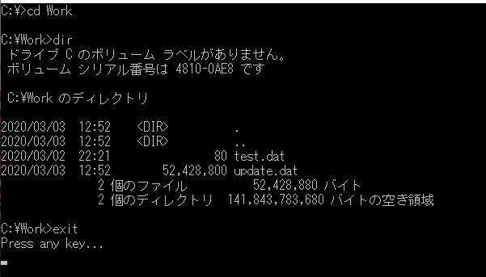

[C#] コマンド(cmd)を実行する方法(Processクラス)
こんにちは。明月です。
この投稿はC#でコマンド(cmd)を実行する方法(Processクラス)に関する説明です。
C#を利用してプログラミングすることは普通はWindow環境で構築します。CoreでLinux環境やIOT環境でCoreを使いますが、まだ多くあることではありません。
そのため、Processクラスを利用すればWindow Commandを操作できるようなプログラムを開発できます。
using System;
using System.Diagnostics;
namespace ProcessExample
{
// Processクラスを継承する。
class Program : Process
{
// コンストラクタ
public Program()
{
// Process環境設定クラス
ProcessStartInfo startInfo = new ProcessStartInfo();
// 実行するプログラム名
startInfo.FileName = "CMD.exe";
// シェル配置設定 = false
startInfo.UseShellExecute = false;
// 入力Streamを使用可否
startInfo.RedirectStandardInput = true;
// 出力Streamを使用可否
startInfo.RedirectStandardOutput = true;
// エラーStreamを使用可否
startInfo.RedirectStandardError = true;
// Processを終了時(Close関数を呼出す時)、イベント発生可否
base.EnableRaisingEvents = false;
// Processクラスに環境設定
base.StartInfo = startInfo;
// 実行関数呼び出す
Executor();
}
// 実行関数
public void Executor()
{
// 作業開始ディレクトリ
base.StartInfo.WorkingDirectory = @"C:\";
// コンソール画面に表示
Console.Write(base.StartInfo.WorkingDirectory + ">");
// exitコマンドが入力されるまで無限ループ
while (true)
{
// コンソールからコマンドを受け取る。
string cmd = Console.ReadLine();
// exitコマンドが入力される時に終了する。
if ("exit".Equals(cmd.Trim(),StringComparison.OrdinalIgnoreCase))
{
// 無限ループ終了
break;
}
try
{
// Process開始(cmd.exe実行)
base.Start();
// 入力Streamのリソース設定
using (base.StandardInput)
{
// cmd.exe実行した後、コマンドを入力する
base.StandardInput.Write(cmd + Environment.NewLine);
}
// エラーStreamのリソース設定
using (base.StandardError)
{
// Cmd.exeからエラー出力をStringで取得する。
var ret = base.StandardError.ReadToEnd();
// データがなければ、
if (!String.IsNullOrWhiteSpace(ret))
{
// コンソールに出力する。
Console.WriteLine(ret);
}
}
// 出力Streamのリソース設定
using (base.StandardOutput)
{
// Cmd.exeから出力をStringで取得する。
var ret = base.StandardOutput.ReadToEnd();
// 出力データに改行を入れる。
cmd += "\r\n";
// 出力Streamに入力値も含めているので、それを除く。
Console.Write(ret.Substring(ret.IndexOf(cmd) + cmd.Length));
// cmd.exeコマンドは最後にディレクトリがある。それを取得してディレクトリ設定を再更新
String buffer = ret.Substring(ret.LastIndexOf("\r\n\r\n") + 4);
// 最終ディレクトリをWorkDirectoryに設定
base.StartInfo.WorkingDirectory = buffer.Substring(0, buffer.Length - 1);
}
}
catch (Exception e)
{
// エラーが発生する時にディレクトリ再設定
base.StartInfo.WorkingDirectory = @"C:\";
// エラーをコンソールに出力する。
Console.WriteLine(e);
}
finally
{
// cmd.exe終了
base.Close();
}
}
}
// メイン実行関数
static void Main(string[] args)
{
// プログラム実行
new Program();
// コンソール待機
Console.WriteLine("Press any key...");
Console.ReadKey();
}
}
}

上の結果をみれば始めDドライブでコンソールが始まります。まるでcmdコマンドらしくカーソルがc:>の次にフォーカスになっています。そしてディレクトリ変更する時にドライブc:\ディレクトリ>で表示されます。最終、dirコマンドを実行してファイルリストを取得します。最後にexitのコマンドでProcessプログラムを終了します。
参考に上の結果はcmd.exeプログラムではなく、cmd.exeと最大に似ているUIで作りました。ほぼそっくりです。
ここまでC#でコマンド(cmd)を実行する方法(Processクラス)に関する説明でした。
ご不明なところや間違いところがあればコメントしてください。
「Devlopment note / C#」の他投稿
- [C#] EMailを送信する方法(System.Net.Mail)2020/04/22 19:00:42
- [C#] ini環境ファイルを使う方法2020/04/22 00:09:39
- [C#] 環境設定ファイルを扱う方法(System.Configuration)2020/04/20 19:37:57
- [C#] Reflectionを利用してクラス複製する方法2020/04/17 00:34:33
- [C#] XMLをXPathを利用してデータを取得する方法2020/04/16 00:47:17
- [C#] NSoupライブラリを利用してXMLとHTMLをパーシングする方法2020/04/14 19:34:15
- [C#] 日付フォーマット2020/04/09 20:53:20
- [C#] ログライブラリ(log4net)を設定する方法2020/04/08 13:04:22
- [C#] Zipの圧縮ファイルを解凍するコードを作成する方法2020/04/07 11:17:44
- [C#] Zip圧縮コードを作成する方法2020/04/06 14:56:13
- [C#] 数字フォーマット(お金表示及び小数点以下表示)2020/04/03 00:38:37
- [C#] コマンド(cmd)を実行する方法(Processクラス)2020/03/31 07:15:40
- [C#] FTPに接続してファイルダウンロード、アップロードする方法2020/03/27 19:20:14
- [C#] HttpWebRequestを利用してウェブページを読み込みする方法2020/03/27 00:23:19
- [C#] Base64のエンコード、デコードする方法2020/03/26 02:19:50
最新投稿
- [Java] 53. ウェブサービス(Web service)でエラーページを処理する方法2021/06/25 13:35:54
- [Design pattern] 1-3. ファクトリメソッドパターン(Factory method pattern)2021/06/23 19:45:37
- [Java] WebSocketでチャット履歴をローディングする方法2021/06/15 18:34:45
- [Java] WebSocketを利用してユーザ(サイト運用者)が他のユーザとチャットする方法2021/06/15 17:20:08
- [Design pattern] 1-2. ビルダーパターン(Builder pattern)2021/06/11 19:06:28
- [Design pattern] 1-1. シングルトンパターン(Singleton pattern)2021/06/09 19:40:05
- [Design Pattern] デザインパターンの紹介2021/06/08 20:42:36
- [Tools] Dbeaver(無料Sql queryブラウザツール)2021/04/28 18:26:49
- [Bootstrap] HTMLデザインのフレームワークのBootstrap紹介2020/07/30 19:06:36
- [Python] メール(smtplib)を送信する方法2020/07/27 18:38:43
- [Python] HttpConnection(requestsモジュール)でウェブサーバーで接続する方法2020/07/20 14:41:51
- [Python] Excel(openpyxl)を扱う方法2020/07/16 16:40:31
- [Python] ファイル圧縮、解凍(zipfile)する方法2020/07/14 19:14:22
- [Python] Apache cgiでPythonを使う方法2020/07/09 19:58:19
- [Python] Web serverを起動する方法(http.server)2020/07/09 00:13:13